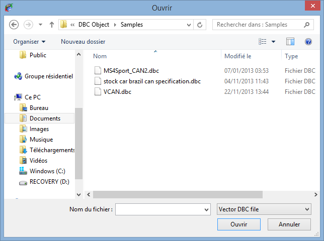

A Vector CAN data base file (extension *.dbc) is, at the end of day, a Vector CAN configuration. By the way, Vector is the editor of the famous tool CANalyser, one the most used (if not the most) tool in the CAN engineering world.
For more detail about CANalyser and DBC file, please visit http://vector.com/vi_canalyzer_en.html.
As per CANStream a DBC file contains CAN message and parameters description.
To save the pain of creating a CANStream CAN configuration file from scratch if you have already a DBC, CANStream can import it and convert it to its own format.
Do to so, click the 'Import DBC' button  .
.
Select the DBC file to import and click 'Open'.

All messages contained in the DBC as well as all their parameters are going to be added to the current CAN configuration.
Note that the 'DBC import' function doesn't reset the current CAN configuration, it simply add messages coming from the DBC.

Created with the Personal Edition of HelpNDoc: Easy EBook and documentation generator